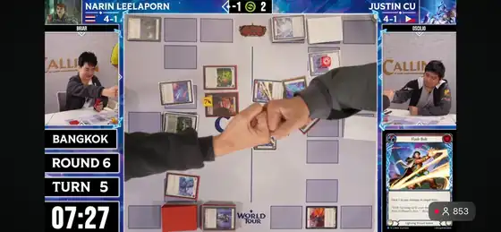

เพื่อนเล่น
ยินดีด้วยครับ
คุณได้เดินผ่านทุกอย่างที่ซ่อนอยู่ในเส้นทางนี้ จนพบตอนจบที่ไม่มีอยู่บนแผนที่ ไม่มีชื่อให้เดาในรายการตรา และไม่มีคำใบ้บนหน้าทำการ์ด
คุณไม่ได้มาถึงตรงนี้เพราะเดินตามลูกศรอย่างเดียว
นี่คือรางวัลของคนที่ไม่ได้มองเห็นแค่สิ่งที่เกมวางไว้ตรงหน้า แต่ยังมองเห็น ที่ซ่อนอยู่ระหว่างทางด้วย
ภาพที่คนดูไม่เห็น
โมเมนต์การดวลการ์ดที่คุณเพิ่งเห็น อาจดูเหมือนการต่อสู้ของ Ranger, Runeblade และ Assassin ที่ยิงเวท ฟันดาบ และปิดเกมกันอย่างเอาเป็นเอาตาย
แต่ในโลกจริง ผู้ชมเห็นเพียงคนสองคนถือไพ่ นั่งนิ่ง และมองหน้ากันอยู่บนโต๊ะ
โลกอีกด้านเกิดขึ้นในจินตนาการของ
เมื่อเรารักเกมมากพอ ไพ่หนึ่งใบอาจกลายเป็นลูกธนู ดาเมจหนึ่งหน่วยอาจกลายเป็นสายฟ้า และการวางการ์ดใบสุดท้าย อาจรู้สึกเหมือนดาบที่ฟันผ่านการป้องกันทั้งหมด
วิดีโอด้านล่างถ่ายทอดความรู้สึกแบบเดียวกันได้ดี — คนเล่นการ์ดไม่ได้เห็นเพียงกระดาษบนโต๊ะ แต่เห็นตัวเองยืนอยู่ในโลกของเกมจริง ๆ
เปิดวิดีโอบน YouTube →
นี่คือภาพที่นักแข่งและผู้ชมเห็นจริงMatch ที่ผมเล่นใน Calling Bangkok ถูกถ่ายทอดสดออกไป และมีคนดูจากทั่วโลก — บนจอมีแค่การ์ด มือ และคนสองคนนั่งคิด แต่ในหัวของผู้เล่น โลกอีกใบกำลังเกิดขึ้นพร้อมกัน
จากจินตนาการ กลายเป็นภาพที่แบ่งปันได้
AI ทำให้ผมถ่ายทอดความรู้สึกในวันนั้นออกมาเป็นการ์ตูนได้จริง
ไม่ใช่เพราะ AI รู้ทุกอย่างตั้งแต่คำสั่งแรก แต่เพราะเราให้ ที่ชัด สร้าง ที่เติบโตไปพร้อมกับงาน ออกแบบ ให้เห็นสิ่งที่ต้องรักษา ตรวจสิ่งที่ผิด แล้วแก้เฉพาะจุดผ่านหลายรอบของ
ชุดภาพดวลที่คุณเห็นในตอนท้าย สร้างและปรับแก้ผ่าน AI บนโทรศัพท์มือถือ โดยไม่ได้พิมพ์ข้อความทับหรือแต่งแก้ด้วย Photoshop
เวอร์ชันสุดท้ายจึงไม่ใช่ผลลัพธ์จากคำสั่งมหัศจรรย์เพียงครั้งเดียว แต่มาจากการสื่อสารกับ AI ให้แม่นขึ้นทุกครั้ง จนภาพ ตัวเลข ลำดับการเล่น และข้อความ ทำงานร่วมกันได้ครบ
นี่คือ Workflow เดียวกับที่คุณได้เรียนมาตลอดเส้นทาง myclover.com
ฝึกให้พลาดน้อยลง
ทีมของเราไม่ได้เริ่มต้นจากการชนะ
ช่วงแรกเราไปแข่งงานไหนก็แพ้ จากนั้นจึงกลับมาดูเทปย้อนหลัง ทบทวนการตัดสินใจ ปรับ ซ้อมใหม่ แล้วกลับไปเล่นอีกครั้ง
วันหนึ่งเราเลิกตั้งเป้าว่า “ต้องเล่นให้ดีที่สุดทุกครั้ง”
และเริ่มฝึกว่า “ทำอย่างไรให้พลาดน้อยที่สุด”
การทำงานกับ AI ก็เหมือนกัน ในช่วงเริ่มต้นคุณจะสั่งผิด AI จะเข้าใจบริบทผิด ภาพจะมีรายละเอียดเกิน ตัวเลขจะสลับ หรือสิ่งที่เคยถูกต้องจะหายไปในรอบแก้ไขถัดมา
ความผิดพลาดจึงไม่ใช่หลักฐานว่าคุณใช้ AI ไม่เป็น มันคือสัญญาณกลับมาจากระบบ ว่ารอบต่อไปควรใส่บริบทเพิ่มตรงไหน ควรล็อกอะไรไว้ และควรแก้เพียงส่วนใดโดยไม่รื้อของที่ดีอยู่แล้ว
ทอยต่อจนผ่านเควสต์
การสร้างงานด้วย AI คล้ายการทอยลูกเต๋ายี่สิบหน้า
บางครั้งคุณอาจได้ 5 บางครั้งได้ 12 และบางครั้งได้ 20 —
กดลูกเต๋าเพื่อทอย
ทอยเล่น ๆ แต่ถ้าออก 1 หรือ 20 เกมจำได้
เป้าหมายไม่ได้มีเพียงการทอยให้ได้ 20 ทุกครั้ง ถ้าผลลัพธ์ระดับ 17 ทำให้คุณผ่านเควสต์ได้ มันก็อาจเป็นคำตอบที่เหมาะสมที่สุดสำหรับงานนั้นแล้ว
คุณเป็นคนตัดสินใจว่าเมื่อไรควรทอยต่อ เมื่อไรควรหยุด และเมื่อไรควรเก็บของดีที่มีอยู่ แล้วแก้แค่จุดสุดท้ายที่ยังไม่เข้าที่
AI ไม่ได้ถือสิทธิ์ตัดสินใจครั้งสุดท้ายแทนคุณ คุณยังคงเป็นผู้เล่น และเป็นคนเลือก ของงานชิ้นนั้นด้วยตัวเอง
เพื่อนเล่น
สุดท้ายนี้ หากวันหนึ่งเรามีโอกาสได้เจอกัน
ผมจะยื่นหมัดไปชนกับคุณ
บนโต๊ะนี้ เรามีสถานะเดียวกัน
เพื่อนเล่น
🍀 Good Luck, Have Fun 🤜🏻🤛🏻